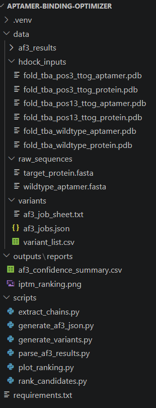

Aptamer變異體結合力預測流程：從序列到排序的完整架構¶
這篇文章記錄一套用AlphaFold3（AF3）與HDOCK篩選aptamer變異體的計算流程，從序列輸入到最終排序，包含每一步驟的操作方式、生物學意義，以及兩個工具如何交叉驗證彼此的判斷。
東西有點多先不傳上去，有需要看什麼檔案可以跟我說！¶

整體架構¶
整個流程分成五個階段，資料由上而下流動：
階段1：變異體序列產生
↓
階段2：AF3批次結構預測（蛋白質+aptamer複合體）
↓
階段3：依ipTM信心分數排序
↓
階段4：拆分結構，準備HDOCK輸入
↓
階段5：HDOCK獨立對接，交叉驗證排序
每個階段的輸出，就是下一階段的輸入，整條線可以完全用Python自動化銜接，只有AF3和HDOCK這兩個網頁服務的送出/下載需要人工操作。
為什麼選擇AlphaFold3與HDOCK¶
AlphaFold3是什麼¶
AlphaFold3（AF3）是DeepMind開發的深度學習模型，用來從序列預測生物分子的立體結構。它的前身AlphaFold2主要專精於單一蛋白質的摺疊預測；AF3的重大進展在於可以同時處理蛋白質、DNA、RNA、小分子配體等不同種類的分子，並直接預測它們組合在一起後的複合體結構，而不只是各自獨立摺疊。對這次的需求來說，這代表我們可以把「凝血酶序列」和「aptamer序列」一起丟進去，直接得到兩者結合後的樣子，不需要先分開預測再另外拼接。
為什麼不用RNAfold、RNAComposer、3dRNA¶
這三個工具是核酸結構預測領域常見的選項，但仔細看它們的設計目的，會發現跟我們的需求有幾個關鍵落差：
- RNAfold：只做二級結構預測，也就是計算這段核酸序列裡哪些鹼基會兩兩配對、形成什麼樣的莖環(stem-loop)排列，輸出的是一張「哪裡跟哪裡配對」的示意圖，沒有三維座標。更關鍵的是，RNAfold的演算法建立在標準Watson-Crick配對與自由能最小化規則上，這套規則本身沒有考慮G-quadruplex這種靠鳥嘌呤之間Hoogsteen氫鍵堆疊形成的非典型結構。TBA正好就是G-quadruplex，如果拿它的序列去跑RNAfold，很可能會被誤判成普通的髮夾(hairpin)結構，從最源頭的判斷就已經偏離真實摺疊方式。
- RNAComposer / 3dRNA：這兩個工具會往前一步，把二級結構「組裝」成三維結構，但運作邏輯是先要有二級結構當輸入（通常就是RNAfold算出來的那張配對圖），再從資料庫裡找相似的三維片段組合起來拼成完整結構。也就是說，要用這兩個工具，得先跑一次RNAfold或類似工具產生二級結構，再送進RNAComposer/3dRNA組裝，是兩道獨立步驟，而且組裝出來的三維結構品質，很大程度取決於一開始那張二級結構圖準不準（相關文獻比較顯示，這類方法的預測結構與真實晶體結構的RMSD平均落在5Å左右，且準確度隨輸入二級結構的品質浮動）。
- 最關鍵的落差：這三個工具都是只針對核酸本身設計的，主要鎖定RNA（DNA的支援更少），而且完全不處理跟蛋白質的交互作用。就算用RNAComposer/3dRNA把aptamer的三維結構做出來，還是得另外找對接工具（也就是我們原本就打算用的HDOCK）去跟凝血酶做結合預測，等於這條路徑是「RNAfold → RNAComposer/3dRNA → 再對接一次」，比AF3直接「序列進去、複合體結構出來」多了兩道手續，而且我們的aptamer是單股DNA，這幾個工具對DNA的支援本來就比RNA弱。
AF3的做法是直接從DNA/蛋白質的一級序列出發，一步預測出兩者結合後的三維複合體結構，跳過「先算二級結構、再組裝三維、再對接」這個多階段流程，這對我們需要批次處理18個變異體來說，流程更精簡、也更不容易在中間任何一站累積誤差。
需要說明的是，這不代表RNAComposer/3dRNA「比較差」——在已知準確二級結構的前提下，這類工具對某些特定RNA（例如已有清楚莖環結構的核糖開關）的三維預測有時反而更貼近實驗結構。只是對我們這個「批次篩選DNA aptamer變異體、且需要同時得到蛋白質結合資訊」的任務來說，AF3一步到位的設計更符合需求。
為什麼選擇HDOCK做交叉驗證¶
AF3給出的ipTM是單一模型的信心分數，為了避免只依賴一套演算法的判斷，我們額外找一個原理完全不同的工具做第二意見。分子對接(molecular docking)工具有幾種常見選擇：
- HADDOCK：功能強大、可以整合實驗證據（例如NMR化學位移、突變數據）來引導對接，但這也代表它比較適合「已經知道結合位點大概在哪裡」的情況；如果沒有額外的實驗資訊，需要用ab-initio模式增加大量取樣，運算時間會拉長很多。
- ClusPro：主要針對蛋白質-蛋白質對接最佳化，對蛋白質-DNA/RNA這類系統的支援與評分函數不是它的設計重點。
- HDOCK：同時支援蛋白質-蛋白質與蛋白質-DNA/RNA對接，內建專門針對核酸交互作用設計的統計評分函數，且採用「模板比對＋從頭對接」的混合演算法，不需要額外提供結合位點資訊也能盲測(blind docking)，單一job運算時間約10-20分鐘，適合我們需要對多個變異體快速批次驗證的場景。
考量到我們的系統是蛋白質-DNA複合體、且不想預先假設結合位點（想讓工具自己盲測找答案），HDOCK在「支援的分子類型」與「不依賴額外實驗資訊」這兩點上最符合需求。
測試系統¶
流程用一組已有實驗結構可對照的配對來驗證準確度：
- Aptamer：Thrombin Binding Aptamer (TBA)，序列
GGTTGGTGTGGTTGG，長度15個核苷酸。這段DNA不是雙股螺旋，而是靠序列中的鳥嘌呤(G)彼此以氫鍵堆疊，摺疊成一種稱為G-quadruplex的環狀結構——可以想像成DNA把自己捲成一個甜甜圈狀的立體骨架，而不是常見的雙股螺旋。 - 目標蛋白質：人類α-凝血酶(human alpha-thrombin)，這個蛋白質在血液中由兩條胺基酸鏈組成（light chain約36個胺基酸、heavy chain約259個胺基酸），兩條鏈以雙硫鍵連接，缺一不可，預測時必須把兩條鏈都輸入才是完整的凝血酶。
- 對照結構：PDB代碼1HUT，這是已經用X光繞射解出的TBA與凝血酶複合體晶體結構，可以拿來檢查電腦預測出的結合位置跟真實已知的結合位置是否吻合。
階段1：變異體序列產生¶
生物學考量¶
G-quadruplex的穩定性主要由堆疊在一起的G來維持，序列中的T則是連接這些G的loop區域，柔性較高、對核心摺疊的貢獻較小。因此變異體設計時，只針對loop區域的T做取代，避免直接破壞G-quadruplex的骨架，讓變異體之間的比較才有意義（否則亂突變G，很可能每個變異體都摺不起來，比較的是「哪個摺不起來得比較不嚴重」而已）。
TBA序列中選定的可突變位置（1-indexed）：第3、4、7、9、12、13位，這些都落在loop區域。每個位置嘗試取代成其他3種鹼基，理論上會產生 6×3 = 18個變異體。
操作方式¶
用Python讀取野生型序列的FASTA檔，對指定位置逐一做鹼基取代，輸出成一份CSV清單，每一列是一個變異體的編號與序列，方便後續程式讀取。
階段2：AF3批次結構預測¶
生物學意義¶
這一步要回答的問題是：「這條DNA序列跟凝血酶放在一起，最後會摺疊、結合成什麼樣子？」AF3是一個深度學習模型，輸入胺基酸序列與核苷酸序列，輸出預測的三維座標，包含DNA、蛋白質分別怎麼摺疊，以及兩者接觸的介面。
操作方式¶
- 把每個變異體的DNA序列，連同凝血酶的兩條蛋白質鏈序列，一起打包成AF3規定的JSON格式（每個「job」包含2個proteinChain + 1個dnaSequence）
- 一次性上傳到AlphaFold Server（一個檔案最多可放100個job，19個變異體可以一次送完）
- 等待運算，每個job約數分鐘到十幾分鐘
- 下載結果，每個job會得到5組模型（依信心排序，第0組為最佳），以及對應的信心指標
關鍵輸出：ipTM¶
AF3會給每個預測結果一個ipTM分數（0~1之間），代表模型對「這兩個分子是否真的結合在一起」的信心程度。可以理解成AF3自己對這次預測打的信心分數，不是直接測量到的結合力數值，數值本身不能換算成Kd等實驗常數，只能用來做候選之間的相對排序。
階段3：依ipTM排序¶
用Python掃描所有下載下來的結果資料夾，讀取每個job的信心摘要檔案，取出ipTM、pTM、ranking_score，整理成一張CSV表格並依ipTM由高到低排序，同時畫成長條圖，方便一眼看出哪些變異體的預測結合力優於野生型。
在13個已完成的變異體中，pos3_ttog與pos13_ttog的ipTM(0.81)略高於野生型(0.80)，成為後續驗證的重點候選。
階段4：拆分結構，準備HDOCK輸入¶
為什麼需要這一步¶
ipTM是AF3單一模型給出的信心分數，如果只依賴這一個數字排序，等於把整個判斷押在同一套算法上。為了避免這個風險，流程加入HDOCK作為獨立的第二意見：把AF3預測出的複合體結構拆開，讓另一套完全不同原理的演算法（基於形狀互補與能量計算的FFT對接算法）重新猜一次這兩個分子怎麼兜在一起。如果兩套獨立方法都同意某個變異體結合得比較好，這個結論才站得住腳。
操作方式¶
用Python讀取AF3輸出的結構檔（.cif格式），依殘基類型（DNA殘基 vs 胺基酸殘基）自動分離，輸出成兩個獨立的PDB檔案：一個只含凝血酶的兩條蛋白質鏈（作為docking的receptor），一個只含DNA aptamer（作為docking的ligand）。
階段5：HDOCK獨立對接¶
操作方式¶
把拆分出來的蛋白質PDB與aptamer PDB，分別作為receptor與ligand上傳到HDOCK Server，送出對接運算，約10~20分鐘後取得結果。
關鍵輸出¶
- Docking Score：對接後的能量穩定度分數，數值越負代表這個結合姿勢在物理上越穩定，方向與ipTM（越高越好）相反，整理資料時需特別留意。
- Ligand RMSD：HDOCK排名前幾名的模型彼此的結構差異程度。數值小（例如<2Å）代表HDOCK對這個結合姿勢的判斷高度收斂、重複得到類似答案；數值大（例如40幾Å）則代表HDOCK自己也沒有把握，排名前幾的模型彼此天差地遠，這種情況下的Docking Score可信度應該打折扣。
綜合排序結果¶
目前已完成13/19個變異體的AF3預測，並對排名前段的3個候選做了HDOCK交叉驗證：
| 候選 | AF3 ipTM | HDOCK Docking Score | HDOCK前2模型RMSD |
|---|---|---|---|
| pos3_ttog | 0.81 | -278.92（三者中最佳） | 0.78 Å（高度收斂） |
| pos13_ttog | 0.81 | -244.50（三者中最差） | 1.45 Å |
| wildtype（對照組） | 0.80 | -264.37 | 2.08 Å |
pos3_ttog是唯一在兩套獨立方法中都排名第一的變異體，且HDOCK對它的結合姿勢判斷高度收斂，是目前預測可信度最高的候選。pos13_ttog則出現兩套方法意見分歧的情況：AF3給出高分，但HDOCK認為它結合得比野生型還差——這類分歧本身就是有用的資訊，代表這個候選的預測結果還不夠穩固，不建議只憑單一工具的分數下判斷。
使用工具與技術清單¶
| 類別 | 工具 | 用途 |
|---|---|---|
| 結構預測 | AlphaFold Server (AlphaFold3) | 預測蛋白質-DNA複合體結構，輸出ipTM信心分數 |
| 分子對接 | HDOCK Server | 獨立對接驗證，輸出Docking Score與Ligand RMSD |
| 程式語言 | Python 3 | 串接整條流程的自動化腳本 |
| 序列/結構處理 | Biopython | 讀取FASTA序列、解析AF3輸出的.cif結構檔、依殘基類型分離蛋白質與DNA鏈 |
| 資料整理 | pandas / csv（標準庫） | 整理變異體清單、彙整AF3信心分數成排序表 |
| 資料格式 | json（標準庫） | 產生AF3網頁版所需的批次上傳格式 |
| 視覺化 | matplotlib | 繪製ipTM排序長條圖 |
| 開發環境 | VS Code | 撰寫與執行所有Python腳本 |
整條流程除了AF3與HDOCK這兩個網頁服務需要人工上傳/下載之外，其餘資料處理都由上述Python套件自動化完成，方便之後有新的變異體批次或新的目標蛋白質時，重複套用同一套腳本。
流程限制¶
- ipTM與Docking Score都只是計算模型給出的相對信心指標，不能直接對應到Kd、koff等實驗量測的物理量。
- AF3對短的單股DNA/RNA這類高度柔性、沒有固定折疊形態的分子，預測不確定性本身就偏高，建議搭配已知的實驗結構（如本次使用的1HUT）做校驗，不宜完全依賴。
- 目前排序基於13/19個變異體的資料，且僅對前段候選做過HDOCK驗證，待剩餘變異體補齊後排序可能變動。
- AF3每個job預設只跑1個隨機種子(seed)，同一序列重複運算，ipTM可能有±0.01~0.02左右的浮動；目前候選間0.01~0.04的分數差距，已經接近這個雜訊範圍，解讀時宜保守。